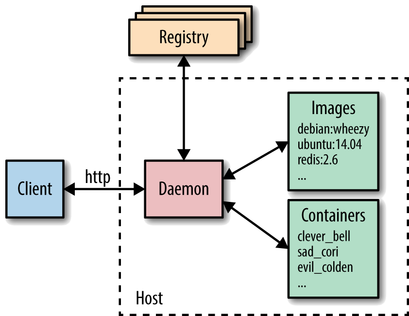
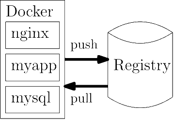

1 Introducción
- Objetivo: Adquirir soltura con Docker para el desarrollo de aplicaciones.
- Introducir los principales conceptos.
- Ejemplos prácticos de workflow para desarrolladores.
- No es objetivo: Explicar las tecnologías de bajo nivel que dan soporte a la ejecución de contenedores como namespaces, cgroups o storage drivers.
- Hincapié en:
- Desarrollo en local
- Automatización de pruebas.
Contenidos - Introducción a Docker - Arquitecturas de Microservicios - Construcción de imágenes - Desarrollo de contenedores - Integración continua - Docker en Producción
1.1 Introducción a Docker
- Docker es open source
- Los contenedores LXC (LinuX Containers) son un concepto relativamente antiguo y utilizado desde hace tiempo por grandes empresas como Amazon o Google, pero su gestión era complicada. Sin embargo, Docker define APIs y herramientas de línea de comandos que hacen casi trivial la creación, distribución y ejecución de contenedores.
- Docker es una “friendly” API a contenedores
- Proceso aislado del resto de los procesos de la máquina gracias a que corre sobre su propio sistema de ficheros, su propio espacio de usuarios y de procesos, sus propias interfaces de red… es por ello que a veces se dice que un contenedor es una máquina virtual ligera
1.2 Características de Docker
Lema de Docker: “Build, Ship and Run, any app, anywhere”
1.2.1 Portabilidad
-
Un contenedor es ejecutado por lo que se denomina el Docker Engine, un demonio que es fácilmente instalable en todas las distribuciones Linux y también en Windows y Mac.
-
Un contenedor ejecuta una imagen de docker, que es una representación del sistema de ficheros y otros metadatos que el contenedor va a utilizar para su ejecución.
- Una vez que hemos generado una imagen de Docker, ya sea en nuestro ordenador o vía una herramienta externa, esta imagen podrá ser ejecutada por cualquier Docker Engine, independientemente del sistema operativo y la infraestructura que haya debajo.
1.2.2 Inmutabilidad
- Una aplicación la componen
- el código fuente
- las librerías del sistema operativo del lenguaje de programación necesarias para la ejecución de dicho código.
- Estas dependencias dependen a su vez del sistema operativo donde nuestro código va a ser ejecutado, y por esto mismo ocurre muchas veces aquello de que “no sé, en mi máquina funciona”.
- Sin embargo, el proceso de instalación de dependencias en Docker no depende del sistema operativo, sino que este proceso se realiza cuando se genera una imagen de docker.
- Es decir, una imagen de docker (también llamada repositorio por su parecido con los repositorios de git) contiene tanto el código de la aplicación como las dependencias que necesita para su ejecución.
- Una imagen se genera una vez y puede ser ejecutada las veces que sean necesarias, y siempre se ejecutará con las misma versión del código fuente y sus dependencias, por lo que se dice que es inmutable.
- Si unimos inmutabilidad con el hecho de que Docker es portable, decimos que:
- Docker es una herramienta fiable, ya que una vez generada una imagen, ésta se comporta de la misma manera independientemente del sistema operativo y de la infraestructura donde se esté ejecutando.
1.2.3 Ligereza
- Los contenedores corriendo en la misma máquina comparten entre ellos el sistema operativo, pero cada contenedor es un proceso independiente con su propio sistema de ficheros y su propio espacio de procesos y usuarios
- Para este fin Docker utiliza
cgroupsynamespaces, recursos de aislamiento basados en el kernel de Linux - Esto hace que la ejecución de contenedores sea mucho más ligera que otros mecanismos de virtualización.
- Comparemos por ejemplo con Virtualbox:
- Virtualbox permite del orden de 4 ó 5 máquinas virtuales en un ordenador convencional, mientras que en el mismo ordenador podremos correr cientos de contenedores sin mayor problema, además de que su gestión es mucho más sencilla.
1.3 Componentes de Docker
Docker está formado fundamentalmente por tres componentes:
- Docker Engine
- Docker Client
- Docker Registry

1.3.1 Docker Engine o Demonio Docker:
Es un demonio que corre sobre cualquier distribución de Linux (y ahora también en Windows y Macs) y que expone una API externa para la gestión de imágenes y contenedores (y otras entidades que se van añadiendo en sucesivas distribuciones de docker como volúmenes o redes virtuales). Podemos destacar entre sus funciones principales:
- Creación de imágenes docker.
- Publicación de imágenes en un Docker Registry o Registro de Docker (otro componente Docker que se explicará a continuación).
- Descarga de imágenes desde un Registro de Docker
- Ejecución de contenedores usando imágenes locales.
Otra función fundamental del Docker Engine es la gestión de los contenedores en ejecución, permitiendo parar su ejecución, rearrancarla, ver sus logs o sus estadísticas de uso de recursos.
1.3.2 Docker Registry o Registro Docker (Docker Hub)
- El Registro es otro componente de Docker que suele correr en un servidor independiente y donde se publican las imágenes que generan los Docker Engine de tal manera que estén disponibles para su utilización por cualquier otra máquina.
- Es un componente fundamental dentro de la arquitectura de Docker ya que permite distribuir nuestras aplicaciones.
- El Registro de Docker es un proyecto open source que puede ser instalado gratuitamente en cualquier servidor, pero Docker ofrece Docker Hub, un sistema SaaS de pago donde puedes subir tus propias imágenes, acceder a imágenes públicas de otros usuarios, e incluso a imágenes oficiales de las principales aplicaciones como son: MySQL, MongoDB, RabbitMQ, Redis, etc.
- El registro de Docker funciona de una manera muy parecida a git (de la misma manera que Docker Hub y sus métodos de pago funcionan de una manera muy parecida a Github).
- Cada imagen, también conocida como repositorio, es una sucesión de capas. Es decir, cada vez que hacemos un
builden local de nuestra imagen, el Registro de Docker sólo almacena el diff respecto de la versión anterior, haciendo mucho más eficiente el proceso de creación y distribución de imágenes.
1.3.3 Docker Client o Cliente Docker
- Es cualquier herramienta que hace uso de la api remota del Docker Engine, pero suele hacer referencia al comando
dockerque hace las veces de herramienta de línea de comandos (cli) para gestionar un Docker Engine. - La cli de docker se puede configurar para hablar con un Docker Engine local o remoto, permitiendo gestionar tanto nuestro entorno de desarrollo local, como nuestros servidores de producción.
1.4 Ciclo de Desarrollo del Software con Docker
Docker transforma radicalmente el concepto de entorno local de desarrollo. La siguiente figura muestra un esquema de dicho entorno local de desarrollo:

- Los desarrolladores pueden correr contenedores con las dependencias externas de la aplicación que están desarrollando, tales como
nginxomysql. - También corren la aplicación que están desarrollando en su propio contenedor
- Una vez que ha terminado el desarrollo de una nueva funcionalidad y los tests se pasan en local se puede hacer
pushde la nueva imagen que han desarrollado al Registro. - La imagen pusheada puede ser descargada en los servidores de producción para desplegar una nueva versión de nuestra aplicación con la garantía de que se comportará de la misma manera que en el entorno local del desarrollador gracias a las propiedades de portabilidad e inmutabilidad de los contenedores.
Este ciclo de desarrollo es la gran ventaja que aporta Docker a los ciclos de desarrollo de software, y la razón por la que Docker se ha hecho tan popular.
1.5 Instalación de Docker
- En la instalación de Docker queremos distinguir:
- La instalación para el desarrollo en local
- La instalación en servidores para correr código en producción
- En cuanto a la instalación en servidores de producción, la mayoría de proveedores de servicio: AWS, GCE, Azure, Digital Ocean… disponen de máquinas virtuales con versiones de Docker pre-instaladas.
- En cualquier caso, la instalación es bastante sencilla. Para la instalación en local (para desarrolladores) tenemos Docker for Mac y Docker for Windows.
-
Tanto Docker for Mac como Docker for Windows instalan el Docker Engine, la herramienta de línea de comandos
docker, ydocker-compose, una herramienta de desarrollo extremadamente útil y que explicaremos en detalle en las próximas lecciones. - Docker for Windows
- Docker for Ubuntu
Se puede hacer la instalación de Docker usando el canal edge o el canal stable. El canal edge se actualiza cada mes, y el de stable cada tres meses, por lo que tarda más en tener algunas funcionalidades -pero es más estable.
1.5.1 Instalación de Docker CE (Comunity Edition) en Linux
Se puede instalar Docker CE de diferentes maneras, según sean las necesidades:
- La mayoría de los usuarios configuran los repositorios de Docker e instalan desde ellos, para facilitar las tareas de instalación y actualización. Este es el enfoque recomendado.
- Algunos usuarios descargan el paquete
.deb, lo instalan manualmente y administran las actualizaciones de forma completamente manual. Esto es útil en situaciones como la instalación de Docker en sistemas sin acceso a Internet. - En los entornos de prueba y desarrollo, algunos usuarios optan por usar scripts automatizados para instalar Docker.
Se describirá solo el proceso de instalación del primer caso mientras que para proceder con el resto se puede consultar en la documentación de docker cómo hacerlo.
1.5.1.1 Instalar usando el repositorio
Antes de instalar Docker CE por primera vez en una nueva máquina host, debe configurar el repositorio de Docker. Después, se puede instalar y actualizar Docker desde el repositorio.
Configurar el repositorio
- Actualizar el índice de los paquetes
apt:
$ sudo apt-get update
- Instalar los paquetes para permitir que
aptuse un repositorio sobre HTTPS:
$ sudo apt-get install \
apt-transport-https \
ca-certificates \
curl \
gnupg-agent \
software-properties-common
- Agregar la llave GPG oficial de Docker:
$ curl -fsSL https://download.docker.com/linux/ubuntu/gpg | sudo apt-key add -
- Verificar que ahora se tenga la clave con la huella digital 9DC8 5822 9FC7 DD38 854A E2D8 8D81 803C 0EBF CD88, buscando los últimos 8 caracteres de la huella digital.
$ sudo apt-key fingerprint 0EBFCD88
pub rsa4096 2017-02-22 [SCEA]
9DC8 5822 9FC7 DD38 854A E2D8 8D81 803C 0EBF CD88
uid [ unknown] Docker Release ( CE deb ) <docker@docker.com>
sub rsa4096 2017-02-22 [ S]
Utilizar el siguiente comando para configurar el repositorio stable. Para agregar el repositorio nightly o de test (o ambos), agregar la palabra nightly o test después de la palabra stable en los comandos (una descripción de los canales nightly y test se puede encontrar aquí).
sudo add-apt-repository \
"deb [arch=amd64] https://download.docker.com/linux/ubuntu \
$(lsb_release -cs) stable"
Instalar Docker CE
- Actualizar el índice de paquetes apt.
$ sudo apt-get update
- Instalar la última versión de Docker CE y container, o consultar en la documentación si se quiere instalar una versión específica:
$ sudo apt-get install docker-ce docker-ce-cli containerd.io
- Verificar que Docker CE está instalado correctamente ejecutando la imagen de
hello-world.
$ sudo docker run hello-world
Este comando descarga una imagen de prueba y la ejecuta en un contenedor. Cuando el contenedor se ejecuta, imprime un mensaje informativo y sale.
Docker CE está instalado y funcionando. Se crea el grupo docker pero no se agrega ningún usuario. Se necesitará usar sudo para ejecutar los comandos de docker. Continuar con la post-instalación en Linux para permitir que los usuarios sin privilegios ejecuten los comandos de Docker (sudo usermod -aG docker $USER, debe hacerse inmediatamente antes de lanzar comandos de Docker como root o se generarán errores), para arrancar el servicio desde el boot y para otros pasos de configuración opcionales y arreglar posibles errores.
1.5.2 Docker en LXC
- Para ejecutar docker en un conteneder LXC hemos de lanzarlo con:
lxc launch ubuntu:bionic <contenedor> -c security.nesting=true
- o bien, si ya lo tenemos creado, cambiar su comportamiento con
lxc config set <contenedor> security.nesting true
lxc restart <contenedor>
1.6 Comandos comunes para gestionar contenedores
Una vez que tenemos docker corriendo en nuestra máquina, podemos empezar a ejecutar algunos comandos:
docker <comando> --helpdocker version: da información sobre la versión de docker que estamos corriendo.docker info: da información acerca de la cantidad de contenedores e imágenes que está gestionando la máquina actual, así como los plugins actualmente instalados.docker run: crea un contenedor a partir de una imagen. Este comando permite multitud de parámetros, que son actualizados para cada versión del Docker Engine, por lo que para su documentación lo mejor es hacer referencia a la página oficial.docker ps: muestra los contenedores que están corriendo en la máquina. Con el flag-amuestra también los contenedores que están parados.docker inspect: muestra información detallada de un contenedor en formato json. Se puede acceder a un campo particular con el comandodocker inspect -f '{{.Name}}' <contenedor>.docker stop: para la ejecución de un contenedor.docker start: reanuda la ejecución de un contenedor.docker rm: elimina un contenedor. Para borrar todos los contenedores de una máquina se puede ejecutar el comandodocker rm -fv $(docker ps -aq).
memoria utilizada, la CPU, el disco…
docker exec: ejecuta un comando en un contenedor. Útil para depurar contenedores en ejecución con las opcionesdocker exec -it <contenedor> bash.docker cp: copia archivos entre el host y un contenedor.docker logs: muestra los logs de un contenedor.docker stats: muestras las estadísticas de ejecución de un contenedor.docker system prune: utilidad para eliminar recursos que no están siendo usados en este momento.
También podemos configurar el cliente de docker para hablar con Docker Engines remotos usando las variables de entorno:
export DOCKERHOST="tcp://ucp.dckr.io:443"
export DOCKERTLSVERIFY=1
export DOCKERCERTPATH="~/ucp/stage"
para conectar a un Docker Engine escuchando en la url tcp://ucp.dckr.io:443 y usando TLS y los certificados del directorio ~/ucp/stage.
Si la conexión fuera abierta, indicaríamos export DOCKERTLSVERIFY=0.
1.7 Conclusiones
- Docker es una tecnología disruptiva que todo desarrollador debe conocer
- Ignorar Docker será una desventaja competitiva para cualquier compañía